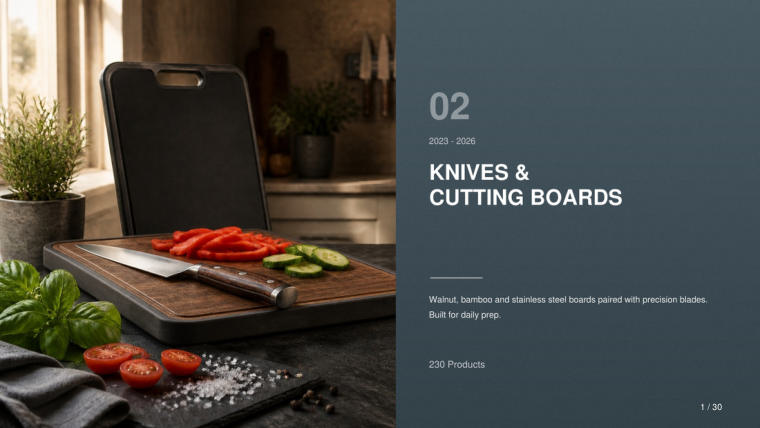
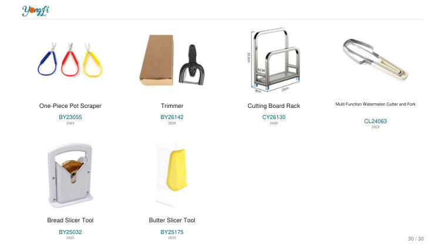

Knives & Cutting Boards — Knives & Cutting Boards
Wholesale Knives & Cutting Boards from Yongli — BSCI & ISO 9001 certified OEM/ODM manufacturer since 2010. 30 catalogue pages of products, codes and
Catalogue pages1–30
Pages in range30
MaterialsFood-grade materials


About This Range
- Range: 30 catalog pages starting at PDF page 1
- Materials: Food-grade materials
- OEM & ODM: custom mold design, Pantone color matching, custom packaging and logo printing
- Exported to 34 countries across Europe, America, Middle East and beyond
- In-house R&D, tooling and mass production since 2010
Quality & Compliance
BSCIISO 9001FDALFGBEN71REACHRoHS
BSCI & ISO 9001 certified OEM/ODM manufacturer since 2010. Serving customers in 34 countries with one-stop OEM, packaging, design and logistics. Vision: Make Globe Trade Easy.
Products in this range
Product names and codes exactly as printed in the catalogue. Click a page number to jump straight to that page.
| Code | Product | Page |
|---|---|---|
| CY24098 | Square Stainless Steel Cutting Board | p.2 → |
| EY26001 | Silicone Foldable Cutting Board | p.2 → |
| EL25006 | Silicone Cutting Board | p.2 → |
| AY24136 | TPU Cutting Board | p.2 → |
| EY25003 | Acacia Wood Stainless Cutting Board | p.3 → |
| CL25018 | Double Sided Cutting Board | p.3 → |
| CY25016 | Double Sided Cutting Board | p.3 → |
| CY25026 | Titanium Cutting Board | p.3 → |
| DY24178 | Handled Bamboo Cutting Board | p.3 → |
| CL24106 | Stainless Steel Cutting Board | p.3 → |
| EY26014 | Bamboo Cutting Board | p.3 → |
| CL24085 | Stainless Steel Cutting Board | p.4 → |
| CY24116 | Stainless Steel Cutting Board | p.4 → |
| CY25029 | Titanium Double Sided Cutting Board | p.5 → |
| CL24059 | Pure Titanium Cutting Board | p.6 → |
| EY25014 | Stainless Steel Cutting Board | p.6 → |
| EY25007 | Double Sided Stainless Cutting Board | p.6 → |
| CL24124 | Double Sided Titanium Cutting Board | p.7 → |
| CY25020 | Swan Stainless Steel Cutting Board | p.7 → |
| CY24058 | Stainless Steel Cutting Board | p.7 → |
| EL25018 | Round Hole Cutting Board | p.7 → |
| EY25011 | Crystalline Titanium Cutting Board | p.8 → |
| EL26012 | Double-Sided Steak Cutting Board | p.8 → |
| EL25005 | Pure Titanium Cutting Board | p.8 → |
| EY26006 | Double-Sided Grooved Cutting Board | p.8 → |
| EY25002 | Double Sided Cutting Board Set | p.8 → |
| CL25001 | Rechargeable Defrost Cutting Board | p.9 → |
| CL24093 | Walnut Wood Cutting Board | p.9 → |
| EY25013 | Non Slip Stainless Cutting Board | p.9 → |
| BY24139 | Fruit Cutting Board | p.9 → |
| BY24026 | Plastic Cutting Board | p.9 → |
| EY26008 | 3-in-1 Stainless Steel Folding Board | p.10 → |
| EY25015 | PP Plastic Cutting Board Set | p.10 → |
| BL24182 | Half Moon Cutting Board | p.10 → |
| BY26065 | Expandable Folding Cutting Board | p.10 → |
| BY25058 | Foldable Cutting Board with Lid | p.10 → |
| BY25061 | Foldable Cutting Board | p.10 → |
| BY24175 | Foldable Cutting Board | p.10 → |
| BY26069 | Multi-Function Folding Cutting Board | p.11 → |
| BL24118 | Wheat Straw Cutting Board | p.11 → |
| EY26002 | Resin Plastic Cutting Board | p.11 → |
| BL24147 | Defrost Cutting Board | p.11 → |
| BY24126 | Wheat Straw Cutting Board | p.11 → |
| DY23006 | Small Fish Chopping Board | p.11 → |
| EY25017 | Acrylic Cutting Board | p.11 → |
| EL26010 | Checkered Cutting Board | p.11 → |
| DL26066 | 5-Piece Bamboo Cutting Board Set | p.12 → |
| HY23017 | Wooden Cutter Chopping Board | p.12 → |
| DY24045 | Acacia Wood Cutting Board | p.12 → |
| DY25147 | Magnetic Knife Stand | p.12 → |
| EY26009 | Double-Sided Bamboo Cutting Board | p.12 → |
| EL26013 | Bamboo Cutting Board | p.12 → |
| DY24149 | Bamboo Cutting Board | p.12 → |
| DY25080 | Rosewood Grooved Cutting Board | p.13 → |
| CL25053 | Stainless Steel Knife Sharpener | p.13 → |
| DY26191 | Rolling Knife Sharpener | p.13 → |
| CY26145 | Folding Knife Sharpener | p.13 → |
| BY26165 | 5-in-1 Adjustable Knife Sharpener | p.13 → |
| CL24119 | Knife Sharpener | p.13 → |
| CL25052 | Portable Knife Sharpener | p.13 → |
| BY26088 | Rolling Knife Sharpener | p.13 → |
| BY26089 | Adjustable Angle Knife Sharpener | p.14 → |
| DY25068 | Cylindrical Roller Knife Sharpener | p.14 → |
| BY26022 | Adjustable Knife Sharpener | p.14 → |
| DY26027 | Electric Knife Sharpener | p.14 → |
| HY24015 | Three Stage Knife Sharpener | p.14 → |
| DY25030 | Square Handle Honing Steel | p.14 → |
| HY25029 | Knife Sharpening Steel | p.14 → |
| AL26072 | Food Warming Tray | p.14 → |
| DY26123 | Mini Warming Tray | p.15 → |
| CY24060 | Kitchen Salad Scissors | p.15 → |
| CY25019 | Multi Function Kitchen Scissors | p.15 → |
| HL25011 | Stainless Steel Gourd Scissors | p.15 → |
| HY23021 | Stainless Steel Poultry Shears | p.15 → |
| CY23021 | Stainless Steel Poultry Shears | p.15 → |
| HL25009 | Stainless Steel Lotus Scissors | p.16 → |
| HY23004 | Ring Scissors | p.16 → |
| HY26036 | Vegetable Scissors | p.16 → |
| HY26021 | Poultry Shears | p.16 → |
| HL25010 | Multi Function Kitchen Scissors | p.16 → |
Showing 80 of 114 rows read from pages 1–20. Open the flip-book for the complete range (p.1–30).